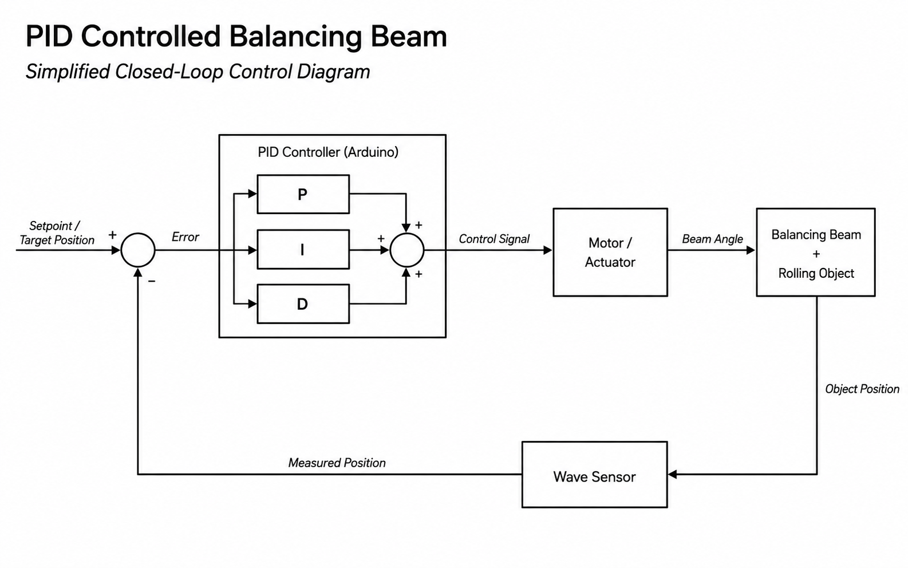

Class Project · Mechanical Design
PID Controlled Balancing Beam
Independently designed, assembled, and tuned a PID-controlled beam that stabilized a rolling object at a target set point using sensor feedback and motor actuation.
Primary test media. Keep BalanceVideo.mov in the same folder as this HTML file, or add an MP4 export named BalanceVideo.mp4 for broader browser support.
Project Goal
Build a compact mechatronic system that could sense object position, command a beam angle, and converge toward a selected balance point.
The project combined mechanical design, electronics, and feedback control. The beam acted as the controlled plant, the rolling object provided a visible response, and the controller adjusted motor output based on measured position error.
System Design
The final build integrated the structure, sensing, controller, actuation, and supporting electronics into a working prototype.
Mechanical Integration
Designed and assembled the beam, support structure, rolling-object path, motor interface, and mounting features needed for repeatable testing.
Feedback Control
Implemented a PID control loop on an Arduino controller to convert position error into motor commands that adjusted beam angle.
Sensing
Used a wave sensor to estimate object position and provide the feedback signal used by the controller.
Electronics
Designed supporting PCB hardware and integrated the controller, sensor, and motor into a compact electrical system.
Technical Work
Concise list of the parts of the project that are most useful to show in a portfolio.
- Built a closed-loop control demonstrator that stabilized a rolling object at a desired set point.
- Integrated mechanical and electrical subsystems including beam structure, motor actuation, sensing, Arduino control, and PCB hardware.
- Tuned PID behavior experimentally by adjusting controller response to reduce oscillation and improve settling behavior.
- Used rapid prototyping to iterate on packaging, mounting, and component placement during assembly and testing.
Media
Add still images here once the final image filenames are in your GitHub folder.


Takeaway
A small class project, but a useful demonstration of hands-on control systems work.
This project connected mechanical design with real sensor feedback and actuator control. It gave me practice turning a control concept into physical hardware, then debugging the system through assembly, integration, and testing.
← Back to Engineering